Human Visual Perception
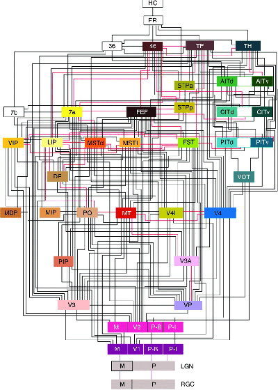
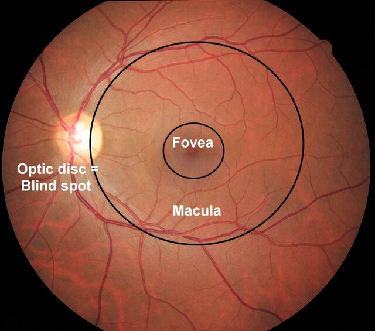
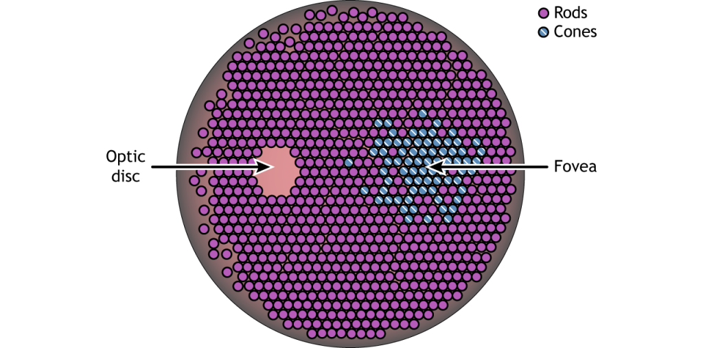
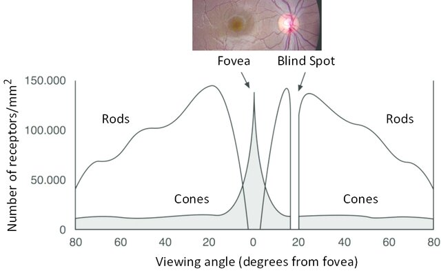
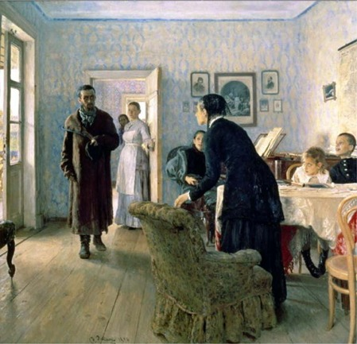
The Unexpected Visitor.
Oil on canvas painting by Ilya Repin, 1884–88.
(Source: Courtesy of www.ilyarepin.org.)
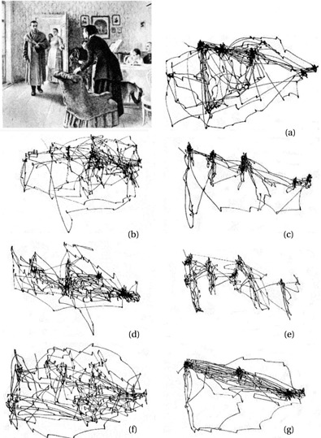
Tasks
- Free examination
- Estimate the material circumstances of the family
- Give the ages of the people
- Surmise what the family had been doing before the arrival of the ‘unexpected visitor’
- Remember the clothes worn by the people
- Remember the position of the people and objects in the room
- Estimate how long the unexpected visitor had been away from the family
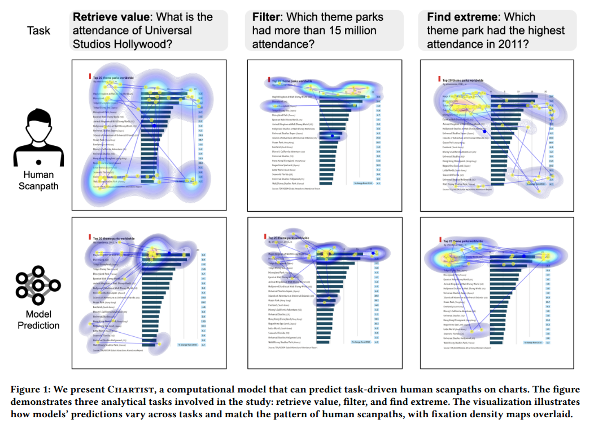
Modules and Automatic processing
seeing stuff that isn’t there
Kanizsa illusion
Automatic Reading
Color perception
Visual illusions
Attention
How do humans perceive graphs?
Neural recycling
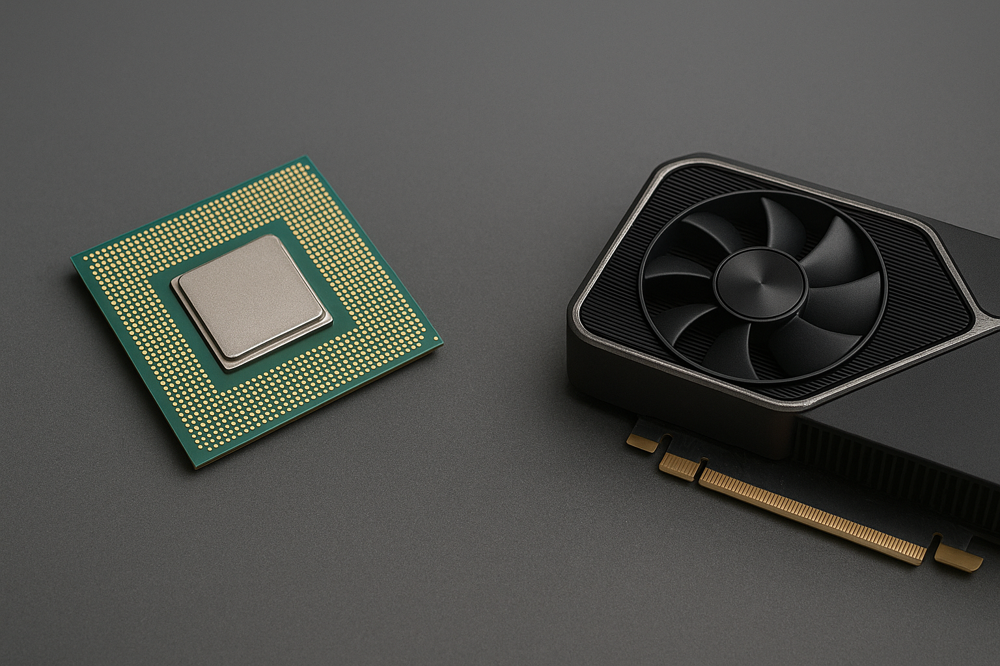
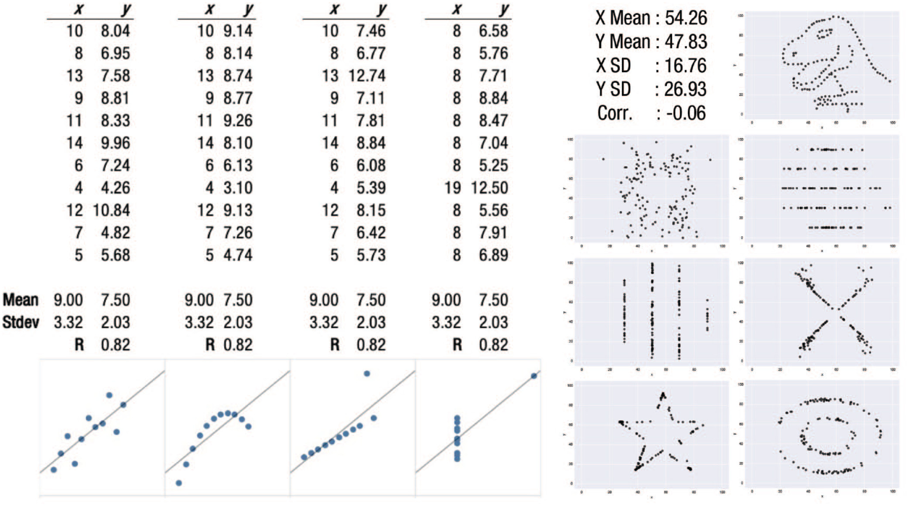
https://journals.sagepub.com/doi/10.1177/15291006211051956
Mapping of data to visual attributes
How do you decide
which visual attributes
to map to your data?
Quiz
1
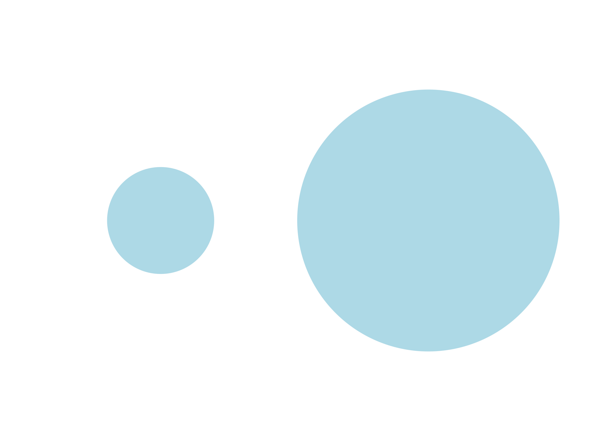
2
3
4
5
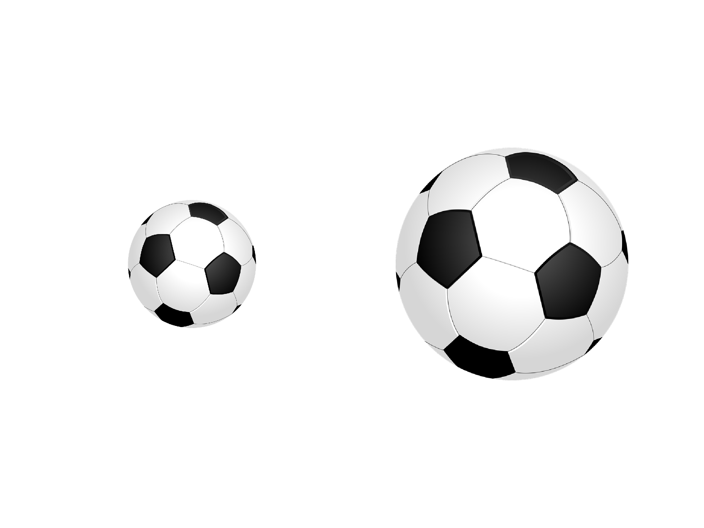
6
7
8
9
10
Solutions
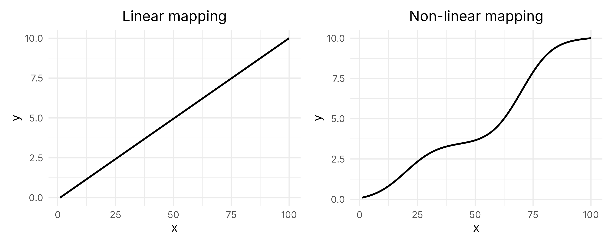
Vision psychophysics
Stevens’ Power law
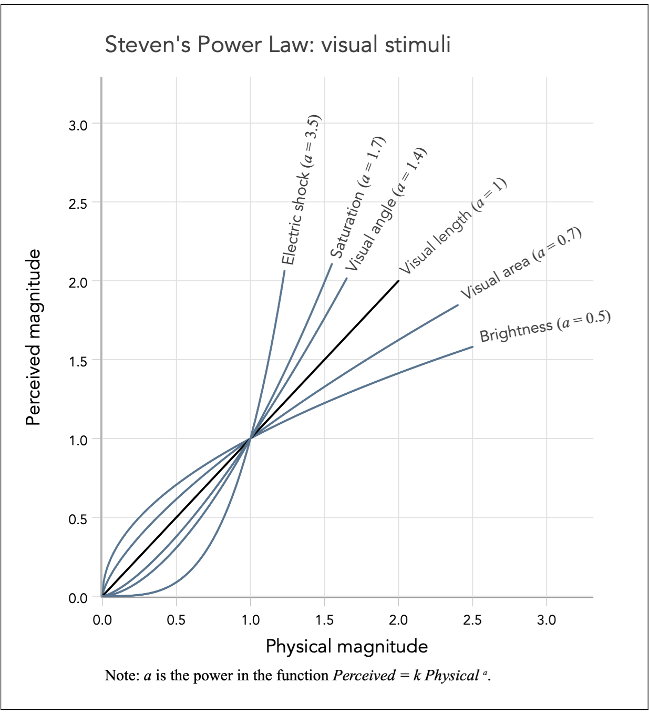
https://graphworkflow.com/decoding/perceived-magnitude/
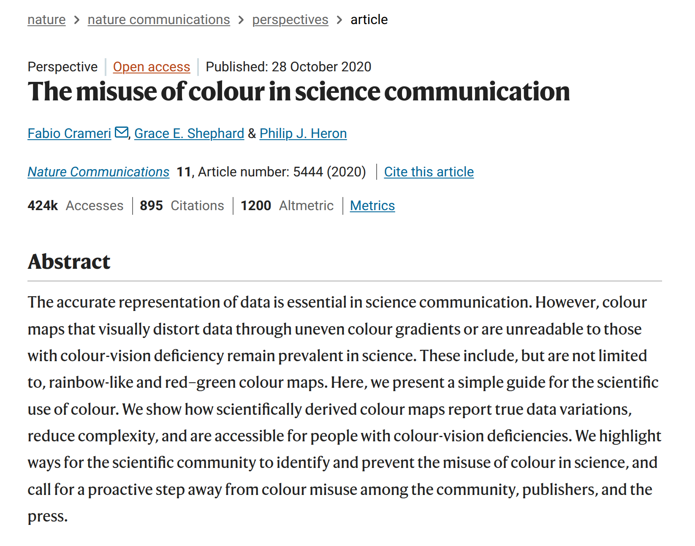
Studies on Graph perception
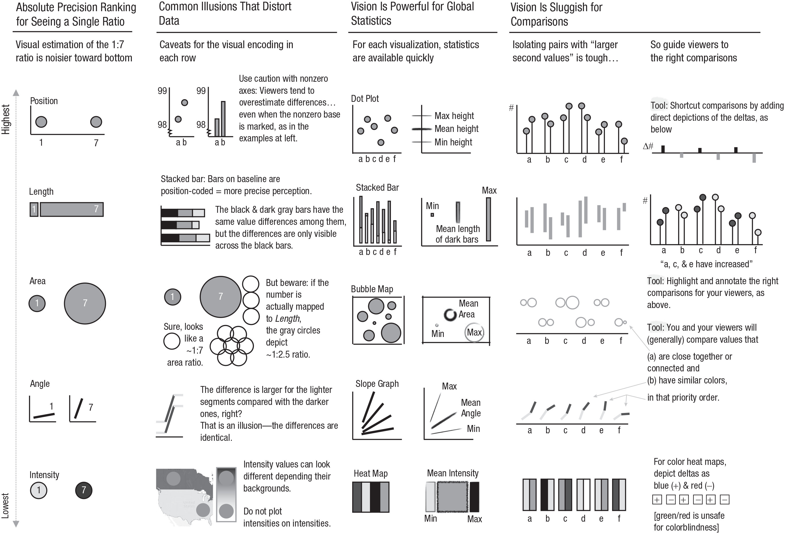
https://journals.sagepub.com/doi/10.1177/15291006211051956
Text perception
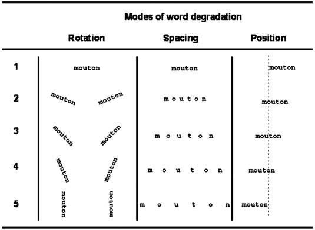
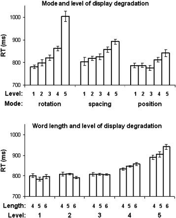
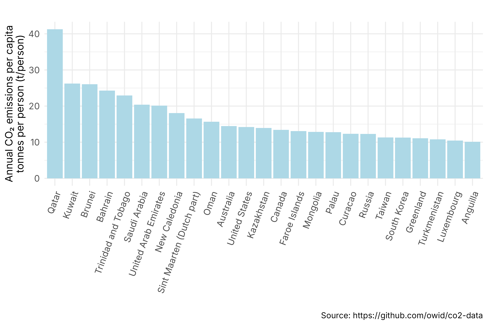
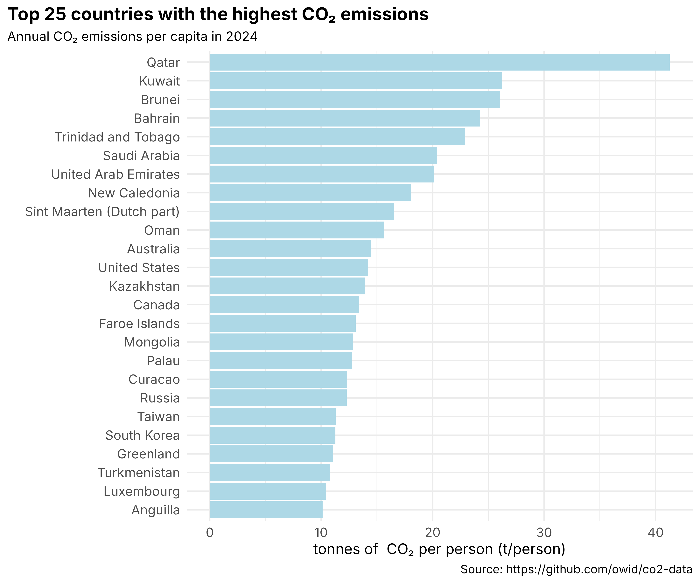
Exercises

Assignment
Review your 4 images again.
For each image:
- identify the mapping of data to visual attributes
- describe what you think about those choices
Post 1 pdf with 1 page per image on Moodle.